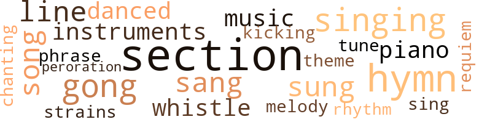
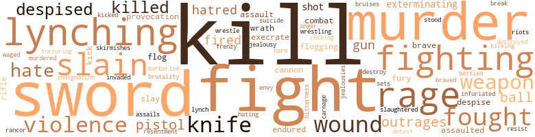

Imperium in Imperio, by Griggs, Sutton Elbert (1899)
55 music-related terms matched in this text.
Most frequent terms in this topic: section (8); hymn (6); gong (4); singing (4); line (3)
dance.v.03
Definition: skip, leap, or move up and down or sideways
| word | sentence |
|---|---|
| danced | He danced around the floor , reaching toward the rear of his pants , yelling : " Pull it out ! |
| danced | A broad , happy smile spread over his face , and his eyes danced with delight . |
gong.n.01
Definition: a percussion instrument consisting of a metal plate that is struck with a softheaded drumstick
| word | sentence |
|---|---|
| gong | Here he gave three strokes to the gong , the signal for dispersion . |
| gong | He rang the gong a second time and yet no one moved . |
| gong | He then in nervous tones repeated his former assertions and then pulled the gong nervously many times in succession . |
| gong | The president then rang the gong again but the students yet remained . |
hymn.n.01
Definition: a song of praise (to God or to a saint or to a nation)
| word | sentence |
|---|---|
| hymn | During the opening exercises a young white lady who sat by his side experienced some trouble in finding the hymn . |
| hymn | He hastened out of church , and as soon as he saw Belton turned loose , hurried to the station and boarded the train for Cadeville , leaving his hymn book and Bible on his seat in the church . |
| hymn | A white girl who sat by him and could not read very well , failed to find the hymn at once . |
| hymn | After singing a hymn and praying , he took for his text the following " passige of scripter : " " It air harder fur a camel to git through de eye of a cambric needle den fur a rich man to enter de kingdom of heben . " |
| hymn | If contending for our rights , given unto us by God , causes us to be slain , let us perish on the field of battle , singing as we pass out of the world , ' Sweet Freedom 's song , ' though every word of this soul-inspiring hymn must come forth wrapped in our hearts ' warm blood . |
| hymn | He held his hymn book upside down while they were singing , much to the amusement of the school . |
kick.v.04
Definition: kick a leg up
| word | sentence |
|---|---|
| kicking | In his eagerness to watch he leaned a good distance out , and when the preacher reached forth his hand to take the last one Belton was so overcome that he lost his balance and tumbled out of his hole on the floor , kicking , and crying over and over again : " I knowed I wuzunt goin ' to git naren dem biscuits . " |
music.n.01
Definition: an artistic form of auditory communication incorporating instrumental or vocal tones in a structured and continuous manner
| word | sentence |
|---|---|
| music | " When in 1619 our forefathers landed on the American shore , the music of welcome with which they were greeted , was the clanking of iron chains ready to fetter them ; the crack of the whip to be used to plow furrows in their backs ; and the yelp of the blood-hound who was to bury his fangs deep into their flesh , in case they sought for liberty . |
| music | Such was the music with which the Anglo-Saxon came down to the shore to extend a hearty welcome to the forlorn children of night , brought from a benighted heathen land to a community of Christians ! |
musical_instrument.n.01
Definition: any of various devices or contrivances that can be used to produce musical tones or sounds
| word | sentence |
|---|---|
| instruments | He went to his cabinet to get out more surgical instruments , and his back was now turned to Belton and he was absorbed in what he was doing . |
| instruments | " The courts of the land are the facile instruments of the Anglo-Saxon race . |
peroration.n.02
Definition: (rhetoric) the concluding section of an oration
| word | sentence |
|---|---|
| peroration | He began his oration , capturing his audience with his first sentence and bearing them along on the powerful pinions of his masterly oratory ; and when his peroration was over the audience drew its breath and cheered wildly for many , many minutes . |
phrase.n.02
Definition: a short musical passage
| word | sentence |
|---|---|
| phrase | It was traced to Belton , and the politicians gave the school board orders to dump Belton forthwith , on the ground that they could not afford to feed and clothe a man who would so vigorously " attack Southern Institutions , " meaning by this phrase the universal practice of thievery and fraud at the ballot box . |
piano.n.01
Definition: a keyboard instrument that is played by depressing keys that cause hammers to strike tuned strings and produce sounds
| word | sentence |
|---|---|
| piano | She took a seat at the piano and played and sang . |
| piano | The child bloomed into a perfect beauty , possessed a charming voice , could perform with extraordinary skill on the piano , and seemed to have inherited the mind of her father , whose praises have been sung in all the land . |
requiem.n.02
Definition: a musical setting for a Mass celebrating the dead
| word | sentence |
|---|---|
| requiem | Little did they dream that they were chanting his requiem . |
rhythm.n.04
Definition: the arrangement of spoken words alternating stressed and unstressed elements
| word | sentence |
|---|---|
| rhythm | As the congressman read the oration and perceived the depth of thought , the logical arrangement , the beauty and rhythm of language , and the wide research displayed , he opened his eyes wide with astonishment . |
section.n.01
Definition: a self-contained part of a larger composition (written or musical)
| word | sentence |
|---|---|
| section | The postmaster was president of the hand of " Nigger Rulers " of that section . |
| section | I have come to give you the political history of this section of Louisiana . |
| section | No whiteman in all the neighboring section , ranked with him intellectually . |
| section | The forward section of seats was reserved for the white people . |
| section | This prop would serve to keep the cut section from breaking through . |
| section | This was printed in The Temps and created a great sensation in political and literary circles in every section of the country . |
| section | Secondly , he saw an immense army of young men and women being trained in the very best manner in every section of the South , to go forth to grapple with the great problems before them . |
| section | She possessed the finest library ever seen in the northern section of Virginia , and all the best of the latest books were constantly arriving at her home . |
sing.v.02
Definition: produce tones with the voice
| word | sentence |
|---|---|
| sang | She sang sweetly and was the most accomplished pianist in town . |
| sung | He remained at Winchester several days visiting all the spots where he had toiled or played , mourned or sung , wept or laughed as a child . |
| sang | She neither sang nor played , but her soul was intensely musical and she had the most refined and cultivated taste in the musical circles in which she moved . |
| sung | He felt himself to he unworthy of such a girl , hut on the other hand Viola had frequently sung his praises in his own ears and in the ears of others . |
| singing | After singing a hymn and praying , he took for his text the following " passige of scripter : " " It air harder fur a camel to git through de eye of a cambric needle den fur a rich man to enter de kingdom of heben . " |
| sang | She took a seat at the piano and played and sang . |
| sing | Those who paused to hear her sing passed on feeling sad at heart . |
| sung | The child bloomed into a perfect beauty , possessed a charming voice , could perform with extraordinary skill on the piano , and seemed to have inherited the mind of her father , whose praises have been sung in all the land . |
singing.n.01
Definition: the act of singing vocal music
| word | sentence |
|---|---|
| singing | Viola 's mother sat by and looked with tender solicitude on her daughter singing and playing as she had never before in her life . |
| singing | If contending for our rights , given unto us by God , causes us to be slain , let us perish on the field of battle , singing as we pass out of the world , ' Sweet Freedom 's song , ' though every word of this soul-inspiring hymn must come forth wrapped in our hearts ' warm blood . |
| singing | He held his hymn book upside down while they were singing , much to the amusement of the school . |
song.n.01
Definition: a short musical composition with words
| word | sentence |
|---|---|
| song | If contending for our rights , given unto us by God , causes us to be slain , let us perish on the field of battle , singing as we pass out of the world , ' Sweet Freedom 's song , ' though every word of this soul-inspiring hymn must come forth wrapped in our hearts ' warm blood . |
| songs | It would be the crowning glory of even this marvelous age ; it would be the grandest contribution ever made to the cause of human civilization ; it would be a worthy theme for the songs of the Holy Angels , if every Negro , away from the land of his nativity , can by means of the pen , force an acknowledgment of equality from the proud lips of the fierce , all conquering Anglo-Saxon , thus eclipsing the record of all other races of men , who without exception have had to wade through blood to achieve their freedom . |
| songs | The hurricane ceased , the clouds sped away as if in terror , and the oaks grew up together under a clear sky of the purest blue , and beautiful birds of all kinds built their nests in the trees , and carolled forth the sweetest songs . |
theme.n.03
Definition: (music) melodic subject of a musical composition
| word | sentence |
|---|---|
| theme | It would be the crowning glory of even this marvelous age ; it would be the grandest contribution ever made to the cause of human civilization ; it would be a worthy theme for the songs of the Holy Angels , if every Negro , away from the land of his nativity , can by means of the pen , force an acknowledgment of equality from the proud lips of the fierce , all conquering Anglo-Saxon , thus eclipsing the record of all other races of men , who without exception have had to wade through blood to achieve their freedom . |
tone.v.01
Definition: utter monotonously and repetitively and rhythmically
| word | sentence |
|---|---|
| chanting | Little did they dream that they were chanting his requiem . |
tune.n.01
Definition: a succession of notes forming a distinctive sequence
| word | sentence |
|---|---|
| tune | " Bah , bah , girl , two weeks will change that tune . |
| strains | Her rich soprano voice rang out clear and sweet and passers by paused to listen to the glorious strains . |
| melody | Beginning in somewhat low tones , her voice gradually swelled and the full , round tones full of melody and pathos seemed to lift up and bear one irresistibly away . |
| line | They formed a line , ten paces in front of him . |
| line | Long ere you shall have come to this line , I shall have met the fate of a traitor . |
| line | Think of my pure-hearted , noble-minded wife , branded as a harlot , and you , my own son , stigmatized as a bastard , because it would be suicide for me to let the world know that you both are mine , though you both are the direct descendants of a governor , and a long line of heroes whose names are ornaments to our nation 's history . |
whistle.v.01
Definition: make whistling sounds
| word | sentence |
|---|---|
| whistle | The man seized a whistle and in an instant two or three policemen came running , followed by a crowd . |
| whistle | The " mansion " dog was Belton 's friend , and a soft whistle quieted his bark . |
202 violence-related terms matched in this text.
Most frequent terms in this topic: kill (10); fight (8); rage (7); fighting (7); murder (7)
abhor.v.01
Definition: find repugnant
| word | sentence |
|---|---|
| execrate | They began to abuse and execrate a national government that would not protect them against color prejudice , but on the contrary actually practiced it itself . |
| execrate | " I deem this , my fellow countrymen , as an appropriate time for us to consider what shall be our attitude , immediate and future , to this Anglo-Saxon race , which calls upon us to defend the fatherland and at the same moment treats us in a manner to make us execrate it . |
aggravation.n.02
Definition: unfriendly behavior that causes anger or resentment
| word | sentence |
|---|---|
| provocation | On the other hand , if an Anglo-Saxon murders a negro in cold blood , without the slightest provocation , he will , if left to the pleasure of our courts , die of old age and go down to his grave in perfect peace . |
| provocation | He was true to his promise , and decided from that moment to never class all white men together , whatever might be the provocation , and to never regard any class as totally depraved . |
anger.n.01
Definition: a strong emotion; a feeling that is oriented toward some real or supposed grievance
| word | sentence |
|---|---|
| anger | The earth , in anger , may belch forth my putrid flesh with volcanic fury , but . |
assail.v.01
Definition: attack someone physically or emotionally
| word | sentence |
|---|---|
| assaulted | One morning the country awoke to be horrified with the news that Mr. Cook 's home had been assaulted at night by a mob of white demons in human form . |
| assaulted | On every possible occasion he viciously assaulted the practice of lynching , denouncing it in most scathing terms . |
attack.v.01
Definition: launch an attack or assault on; begin hostilities or start warfare with
| word | sentence |
|---|---|
| assails | The shibboleth of the Anglo-Saxon race is the courage of man and the virtue of woman : and when , by violence , a member of a despised race assails a defenseless woman ; robs her of her virtue , her crown of glory ; and sends her back to society broken and crushed in spirit , longing , sighing , praying for the oblivion of the grave , it is not to be wondered at that hell is scoured by the Southern white man in search of plans to vent his rage . |
battle.v.01
Definition: battle or contend against in or as if in a battle
| word | sentence |
|---|---|
| battled | God , alone , knows how I battled against it . |
bruise.n.01
Definition: an injury that doesn't break the skin but results in some discoloration
| word | sentence |
|---|---|
| bruises | On these days he would seemingly take pains to give Belton fresh bruises to take home to his mother . |
brush.n.06
Definition: a minor short-term fight
| word | sentence |
|---|---|
| skirmishes | The riots at Homestead , at Chicago , at Lattimer are but skirmishes between the picket lines , informing us that a general conflict is imminent . |
brutality.n.02
Definition: a brutal barbarous savage act
| word | sentence |
|---|---|
| barbarism | The Negro race had left the last relic of barbarism behind , and this young negro , fighting to keep that cab driver from approaching the girl for a fee , was but a forerunner of the negro , who , at the voice of a woman , will fight for freedom until he dies , fully satisfied if the hand that he worships will only drop a flower on his grave . |
butcher.v.01
Definition: kill (animals) usually for food consumption
| word | sentence |
|---|---|
| slaughtered | Bernard preceptibly shuddered at the fate before him but he had determined long since to be true to every higher aspiration of his people , and he would die a death however horrible rather than stand by and see aspiring souls slaughtered for organizing to secure their rights at all hazards . |
cannon.n.04
Definition: heavy automatic gun fired from an airplane
| word | sentence |
|---|---|
| cannon | Long before the rifle ball , the cannon shot , and the exploding shell were through their fiendish task of covering the earth with mortals slain ; while the startled air was yet busy in hurrying to Heaven the groans of the dying soldier , accompanied as they were by the despairing shrieks of his loved ones behind ; while horrid War , in frenzied joy , yet waved his bloody sword over the nation 's head , and sought with eager eagle eyes every drop of clotted gore over which he might exult ; in the midst of such direful days as these , there were those at the North whom the love of God and the eye of faith taught to leap over the scene of strife to prepare the trembling negro for the day of freedom , which , refusing to have a dawn , had burst in meridian splendor upon his dazzled gaze . |
| cannons | The errors in the South , anxious for eternal life , rightfully feared these schools more than they would have feared factories making powder , moulding balls and fashioning cannons . |
contemn.v.01
Definition: look down on with disdain
| word | sentence |
|---|---|
| despised | Others who read her better knew that she despised the butterfly , flitting from flower to flower , and was preserving her heart to give it whole into the keeping of some worthy man . |
| despised | lie looked Belton in the face and said : " May revengeful lightning transfix me with her fiercest bolts ; may hell 's most fiery pillars roll in fury around me ; may I be despised of man and forgotten of my God , if I ever knowingly , in the slightest way , do aught to betray this solemn , this most sacred trust . " |
| despised | The shibboleth of the Anglo-Saxon race is the courage of man and the virtue of woman : and when , by violence , a member of a despised race assails a defenseless woman ; robs her of her virtue , her crown of glory ; and sends her back to society broken and crushed in spirit , longing , sighing , praying for the oblivion of the grave , it is not to be wondered at that hell is scoured by the Southern white man in search of plans to vent his rage . |
| despise | The children all ascribed this partiality to the color of Bernard 's skin , and they all , except Belton , began to envy and despise Bernard . |
| despise | But he shuddered at the awful carnage that would of necessity ensue if two races , living house to house , street to street , should be equally determined upon a question at issue , equally disdainful of life , fighting with the rancor always attendant upon a struggle between two races that mutually despise and detest each other . |
| despised | But , just as a snake , though a venomous animal , by instinct knows its enemy and fights for its life with desperation , just so the Old South instinctively foresaw danger to its social fabric as then constituted , and therefore despised and fought the agencies that were training and inspiring the future leaders of the Negro race in such a manner as to render a conflict inevitable and of doubtful termination . |
craze.n.02
Definition: state of violent mental agitation
| word | sentence |
|---|---|
| frenzy | Tell me who he is that dare separate us and I swear I will kill him , " cried Bernard in a frenzy of rage . |
destroy.v.04
Definition: put (an animal) to death
| word | sentence |
|---|---|
| destroyed | All of the chicken was at last destroyed and only one biscuit remained ; and Belton 's whole soul was now centered on that biscuit . |
| destroy | I urge this because love of liberty is such an inventive genius , that if you destroy one device it at once constructs another more powerful . |
engage.v.07
Definition: carry on (wars, battles, or campaigns)
| word | sentence |
|---|---|
| waged | '" Various men have been put forward for this honor and vigorous campaigns have been waged in their behalf . |
envy.n.01
Definition: a feeling of grudging admiration and desire to have something that is possessed by another
| word | sentence |
|---|---|
| envy | Hearing the boy 's voice , Belton raised his eyes , and seeing his image , which Antoinette had brought into the world , he grasped her in his arms and covered her face with kisses ; and there was joy enough in those two souls to almost excite envy in the bosom of angels . |
exterminate.v.01
Definition: kill en masse; kill on a large scale; kill many
| word | sentence |
|---|---|
| exterminating | That book proved to me that the intermingling of the races in sexual relationship was sapping the vitality of the Negro race and , in fact , was slowly but surely exterminating the race . |
| exterminating | While this intermingling was impairing the vital force of our race and exterminating it , it was having no such effect on the white race for the following reason . |
| exterminating | Thus , the white man was slowly exterminating us and our total extinction was but a short period of time distant . |
ferociousness.n.01
Definition: the trait of extreme cruelty
| word | sentence |
|---|---|
| brutality | He described hangings , revolting in their brutality ; he drew vivid word pictures of various burnings , mentioning one where a white woman struck the match and ignited the pile of wood that was to consume the trembling negro . |
fight.n.02
Definition: the act of fighting; any contest or struggle
| word | sentence |
|---|---|
| combat | " While we , the oppressed , stayed upon the plantation in peace , our oppressors were upon the field of battle engaged in mortal combat ; and it was the blood of our oppressor , not our own , that was paid as the price of our freedom . |
| combat | " Tell posterity , " said Belton , in firm ringing tones that startled the birds into silence , " that I loved the race to which I belonged and the flag that floated over me ; and , being unable to see these objects of my love engage in mortal combat , I went to my God , and now look down upon both from my home in the skies to bless them with my spirit . " |
fight.n.05
Definition: a boxing or wrestling match
| word | sentence |
|---|---|
| fight | Bernard , handsome , brilliant , eloquent , the grandson of a governor , the son of a senator , a man of wealth , to whom defeat was a word unknown , steps out to battle for the freedom of his race ; urged to put his whole soul into the fight because of his own burning desire for glory , and because out of the gloom of night he heard his grief stricken parents bidding him to climb where the cruel world would be compelled to give its sanction to the union that produced such a man as he . |
| fight | I shall never give up my fight for freedom , but I shall never prove false to the flag . |
| fights | But , just as a snake , though a venomous animal , by instinct knows its enemy and fights for its life with desperation , just so the Old South instinctively foresaw danger to its social fabric as then constituted , and therefore despised and fought the agencies that were training and inspiring the future leaders of the Negro race in such a manner as to render a conflict inevitable and of doubtful termination . |
fight.v.02
Definition: fight against or resist strongly
| word | sentence |
|---|---|
| fighting | I determined to spend my life fighting the evil . |
| fight | If I call on you to defend my sovereignty , you must do so even if you have to fight against your own state . |
| fight | The Negro must therefore fight to keep afloat a flag that can afford him no more protection than could a helpless baby . |
| fighting | Negroes , members of this Government , were to be no longer seen fighting negroes before prejudiced white courts . |
| fought | " That same hammer and anvil that forged the steel sword of the Anglo-Saxon , with which he fought for freedom from England 's yoke , also forged the chain that the Anglo-Saxon used to bind the negro more securely in the thralldom of slavery . |
| fighting | Ef yer take Belton out of school yer 'll be fighting ' genst de providence of God . " |
| fight | " It has appeared strange to some that the Americans could fight for their own freedom from England and yet not think of those whom they then held in slavery . |
| fought | The Americans fought for a theory and abstract principle . |
| fought | Newton dug for the law of gravitation ; Herschel swept the starry sky in search of other worlds ; Columbus stood upon the prow of the ship and braved the waves of the ocean and the fiercer ridicule of men ; Martin Luther , single handed and alone , fought the Pope , the religious guide of the world ; and all of this was done while the negro slept . |
| fighting | We know that our patient submission in slavery was due to our consciousness of weakness ; we know that our silence and inaction during the civil war was due to a belief that God was speaking for us and fighting our battle ; we know that our devotion to the flag will not survive one moment after our hope is dead ; but we must not be content with knowing these things ourselves . |
| fighting | Soaked as Old Glory is with my people 's tears and stained as it is with their warm blood , I could die as my forefathers did , fighting for its honor and asking no greater boon than Old Glory for my shroud and native soil for my grave . |
| fight | I may fight to keep her from floating over cesspools of corruption by removing the cesspool ; but I shall never fight to restrict the territory in which she is to float . |
| fight | I may fight to keep her from floating over cesspools of corruption by removing the cesspool ; but I shall never fight to restrict the territory in which she is to float . |
| fighting | But he shuddered at the awful carnage that would of necessity ensue if two races , living house to house , street to street , should be equally determined upon a question at issue , equally disdainful of life , fighting with the rancor always attendant upon a struggle between two races that mutually despise and detest each other . |
| fought | A dark cloud arose and a terrible hurricane swept over the forest ; and the old and new oaks fought furiously in the storm , until a loud voice , like unto that of a God , cried out above all the din of the hurricane , saying in tones of thunder : " Know ye not that ye are parents and children ? |
| fought | When these schools were first projected , the White South that then was , fought them with every weapon at its command . |
| fought | But , just as a snake , though a venomous animal , by instinct knows its enemy and fights for its life with desperation , just so the Old South instinctively foresaw danger to its social fabric as then constituted , and therefore despised and fought the agencies that were training and inspiring the future leaders of the Negro race in such a manner as to render a conflict inevitable and of doubtful termination . |
| fighting | The Negro race had left the last relic of barbarism behind , and this young negro , fighting to keep that cab driver from approaching the girl for a fee , was but a forerunner of the negro , who , at the voice of a woman , will fight for freedom until he dies , fully satisfied if the hand that he worships will only drop a flower on his grave . |
| fight | The Negro race had left the last relic of barbarism behind , and this young negro , fighting to keep that cab driver from approaching the girl for a fee , was but a forerunner of the negro , who , at the voice of a woman , will fight for freedom until he dies , fully satisfied if the hand that he worships will only drop a flower on his grave . |
flog.v.01
Definition: beat severely with a whip or rod
| word | sentence |
|---|---|
| flog | When we contrast the Anglo-Saxon , opening his purse and pouring out his money for the education of the Negro , with the Anglo-Saxon plaiting a scourge to flog the Negro aspiring to learn , the progress is marvelous indeed . |
| flogging | Taking down the cowhide used for flogging purposes Abe left his seat and was passing to and fro , pretending to flog those who most frequently fell heir to the teacher 's wrath . |
| flog | Taking down the cowhide used for flogging purposes Abe left his seat and was passing to and fro , pretending to flog those who most frequently fell heir to the teacher 's wrath . |
fracture.n.01
Definition: breaking of hard tissue such as bone
| word | sentence |
|---|---|
| break | Belton felt that he had made a bad break and looked around a little uneasily at the principal , violently condemning in his heart that rule which led principals to escort young men around ; especially when there was a likelihood of meeting with such a lovely girl . |
fury.n.01
Definition: a feeling of intense anger
| word | sentence |
|---|---|
| fury | The earth , in anger , may belch forth my putrid flesh with volcanic fury , but . |
| rage | Tell me who he is that dare separate us and I swear I will kill him , " cried Bernard in a frenzy of rage . |
| rage | Pointing his finger at Belton , he said : " I think , sir , that you are the most infernal scoundrel that I ever saw , and those whom you call conspirators are a set of sublime patriots ; and further , " hissed Bernard in rage through his teeth , " if you betray those men , I will kill you . " |
| fury | lie looked Belton in the face and said : " May revengeful lightning transfix me with her fiercest bolts ; may hell 's most fiery pillars roll in fury around me ; may I be despised of man and forgotten of my God , if I ever knowingly , in the slightest way , do aught to betray this solemn , this most sacred trust . " |
| rage | That sweet , well modulated voice , full of tender pathos , of biting sarcasm , of withering irony , of swelling rage , of glowing fervor , according as the occasion demanded , was a most faithful vehicle to Bernard ; conveying fully every delicate shade of thought . |
| rage | At times when he felt that no one was watching him , his whole countenance and attitude betokened the rage of despair . |
| rage | The shibboleth of the Anglo-Saxon race is the courage of man and the virtue of woman : and when , by violence , a member of a despised race assails a defenseless woman ; robs her of her virtue , her crown of glory ; and sends her back to society broken and crushed in spirit , longing , sighing , praying for the oblivion of the grave , it is not to be wondered at that hell is scoured by the Southern white man in search of plans to vent his rage . |
| rage | His influence , which alone had just snatched us from the edge of the precipice of internecine war , from whose steep heights we had , in our rage , decided to leap into the dark gulf beneath , was now gone ; his restraining hand was to be felt no more . |
| rage | I fancied that I saw a man do this very thing in a sudden fit of uncontrollable rage . |
gag.v.06
Definition: cause to retch or choke
| word | sentence |
|---|---|
| choking | Their hearts swelled , their bosoms heaved , their breath came quick with choking passion , and there burst from all their throats the one hoarse cry : " War ! |
gun.n.01
Definition: a weapon that discharges a missile at high velocity (especially from a metal tube or barrel)
| word | sentence |
|---|---|
| gun | They cut a hole in the front side of the house , through which they could poke a gun . |
| gun | On the third day we heard the loud report of a gun which we supposed ended his life . |
| guns | Build small commonplace huts on these lands and place rapid fire disappearing guns in fortifications dug beneath them . |
hate.n.01
Definition: the emotion of intense dislike; a feeling of dislike so strong that it demands action
| word | sentence |
|---|---|
| hate | He shall not want for attention , " he added , in a tone accompanied by a lurking look of hate that made Mrs. Piedmont shudder and long to have her boy at home again . |
| hatred | The element most bitterly antagonistic to the whites avoided them , through intense hatred ; and the whites never dreamed of this powerful inner circle that was gradually but persistently working its way in every direction , solidifying the race for the momentous conflict of securing all the rights due them according to the will of their heavenly Father . |
| hatred | She saw that the happenings of the morning had had the effect of deepening a contemptuous prejudice into hatred , and she felt that her child 's school life was to be embittered by the harshest of maltreatment . |
| hate | When the Negro was first given the ballot he used it to convey expression of love and gratitude to the North , while it bore to the South a message of hate and revenge . |
| hate | They voted in a mass , according to the dictates of love and hate . |
| hatred | Strangely enough , his ardent love for Bernard and his bitter hatred of Belton accomplished the very same result in respect to their acquirements . |
hate.v.01
Definition: dislike intensely; feel antipathy or aversion towards
| word | sentence |
|---|---|
| hate | They grew to hate a flag that would float in an undisturbed manner over such a condition of affairs . |
| hating | Beginning with passively hating the flag , they began to think of rebelling against it and would wish for some foreign power to come in and bury it in the dirt . |
| detest | But he shuddered at the awful carnage that would of necessity ensue if two races , living house to house , street to street , should be equally determined upon a question at issue , equally disdainful of life , fighting with the rancor always attendant upon a struggle between two races that mutually despise and detest each other . |
indignation.n.01
Definition: a feeling of righteous anger
| word | sentence |
|---|---|
| outrages | These outrages sank like molten lead into his heart , but he bore them all . |
| outrages | But while I am your supreme earthly sovereign I am powerless to protect you against crimes , injustices , outrages against you . |
| outrages | Whatever outrages may be perpetrated upon him by the people of the state in which he lives , he can not expect any character of redress from the General Government . |
| outrages | The Federal Government would get elected to power by condemning these outrages , and when there , would confess its utter helplessness . |
| indignation | This incident naturally aroused as much indignation among the members of the Imperium as did the destruction of the war ship in the bosoms of the Anglo-Saxons of the United States . |
infuriate.v.01
Definition: make furious
| word | sentence |
|---|---|
| infuriated | Dr. Zackland continued : " Naturally the congregation was infuriated and soon hustled the impudent scoundrel out . |
injury.n.01
Definition: any physical damage to the body caused by violence or accident or fracture etc.
| word | sentence |
|---|---|
| harm | Whenever it would do no harm , a precinct was granted to the republicans for the sake of appearances . |
invade.v.01
Definition: march aggressively into another's territory by military force for the purposes of conquest and occupation
| word | sentence |
|---|---|
| invaded | Politics , science , art , religion , sociology , and , in fact , the whole realm of human knowledge was invaded and explored . |
jealousy.n.01
Definition: a feeling of jealous envy (especially of a rival)
| word | sentence |
|---|---|
| jealousy | With all these points in her favor she was unassuming and bowed her head so low that the darts of jealousy , so universally hurled at the brilliant and popular , never came her way . |
| jealousies | He devoted much time to assuaging jealousies and healing breaches wherever such existed in the ranks of the Imperium . |
kick.v.04
Definition: kick a leg up
| word | sentence |
|---|---|
| kicking | In his eagerness to watch he leaned a good distance out , and when the preacher reached forth his hand to take the last one Belton was so overcome that he lost his balance and tumbled out of his hole on the floor , kicking , and crying over and over again : " I knowed I wuzunt goin ' to git naren dem biscuits . " |
kick_back.v.02
Definition: spring back, as from a forceful thrust
| word | sentence |
|---|---|
| kicks | The older members of the family endured the ordeal very well ; but little " Bessie " always screamed as if she was being tortured , and James Henry received many kicks and scratches from Belton before he was through combing Belton 's hair . |
| kick | As fur his beat-in ' de brat , yer mus n't kick agin dat . |
| kicked | If in our scramble for these crumbs we make too much noise , we are violently kicked and driven out of doors , where , in the sleet and snow , we must whimper and whine until late the next morning when the cook opens the door and we can then crouch down in the corner of the kitchen . |
kill.v.10
Definition: cause the death of, without intention
| word | sentence |
|---|---|
| kill | We will kill him kinder decent and let you have him to dissect . |
| killed | They looked at him as though he was a superior being bearing a charmed life , having escaped being killed . |
| kill | '' We had not the authority nor disposition to kill a traitor , and consequently we had no effective remedy against a betrayal . |
| kill | Tell me who he is that dare separate us and I swear I will kill him , " cried Bernard in a frenzy of rage . |
| kill | Viola looked up , her eyes swimming in tears , and said : " Would you kill God ? " |
| kill | It is necessary , therefore , that we kill these vipers that come , lest we all be slain as vipers . " |
| kill | Pointing his finger at Belton , he said : " I think , sir , that you are the most infernal scoundrel that I ever saw , and those whom you call conspirators are a set of sublime patriots ; and further , " hissed Bernard in rage through his teeth , " if you betray those men , I will kill you . " |
| killed | Bernard had not been killed in his fall because of a parachute which had been so arranged , unknown to him , to save him in the descent . |
| killed | The mob set fire to the house while the occupants slept , and when Mr. Cook with his family endeavored to escape from the flames he was riddled with bullets and killed , and his wife and children were wounded . |
| kill | If you attempt to use your brain I will kill you ; and before I will stoop so low as to use my own physical power to earn my daily bread I will kill myself . ' |
| kill | If you attempt to use your brain I will kill you ; and before I will stoop so low as to use my own physical power to earn my daily bread I will kill myself . ' |
| killed | The only sound to be heard was a universal groan ; those who had not been killed were too badly wounded to cry out . |
| kill | Belton bowed and left the platform , murmuring that he would find and kill the rascal who had played that trick on him . |
| kill | Seeing that each possessed a secret that meant death and disgrace to the other ( for I shall certainly kill myself if I am ever exposed ) I entered into an agreement with him . |
knife.n.02
Definition: a weapon with a handle and blade with a sharp point
| word | sentence |
|---|---|
| knife | He took a long , sharp knife and gazed at its keen edge . |
| knife | He now raised himself up , seized the knife that was near his feet and at a bound was at the doctor 's side . |
| knife | At that instant he was too terrified to act or scream , and before he could recover his self-possession Belton plunged the knife through his throat . |
| knife | But to the man whose blood is nothing but sour swill ; who prefers to stay like fattening swine until pronounced fit for the butcher 's knife ; to such , death comes with a most horrifying visage , and seizing the victim with cold and clammy hands hurries with his disgusting load to some far away dumping ground . |
| knife | " I have been in the hands of an angry mob ; I have dangled from a tree at the end of a rope ; I have felt the murderous pistol drive cold lead into my flesh ; I have been accounted dead and placed upon the dissecting table ; I have felt the sharp surgical knife ripping my flesh apart when I was supposed to be dead ; all of these hardships and more besides I have received at the hands of the South ; but she has not and can not drive truth from my bosom , and the truth shall I declare this day . " |
lynch.v.01
Definition: kill without legal sanction
| word | sentence |
|---|---|
| lynch | They decided that as it was Sunday , they would not lynch him . |
| lynching | Thus the crime for which the man suffers , is not dwelt upon with that unanimity to make it sufficiently odious , and , as a consequence , lynching increases crime . |
lynching.n.01
Definition: putting a person to death by mob action without due process of law
| word | sentence |
|---|---|
| lynching | Governors would announce publicly that they favored lynching . |
| lynchings | " But , I am aware that in a large majority of cases where lynchings occur , outrages upon women are not even mentioned . |
| lynchings | This fact but serves as an argument against all lynchings ; for when lawlessness breaks forth , no man can set a limit where it will stop . |
| lynching | It also warns us as a race to furnish no crime that provokes lynching ; for when lynching once gets started , guilty and innocent alike will suffer , and crimes both great and small will be punished alike . |
| lynching | It also warns us as a race to furnish no crime that provokes lynching ; for when lynching once gets started , guilty and innocent alike will suffer , and crimes both great and small will be punished alike . |
| lynching | " In regard to the lynching of our Comrade Cook , I have this to say . |
| lynching | On every possible occasion he viciously assaulted the practice of lynching , denouncing it in most scathing terms . |
murder.n.01
Definition: unlawful premeditated killing of a human being by a human being
| word | sentence |
|---|---|
| murder | The Governor ordered him under arrest and told him that the best and only thing he could do was to send him back to Cadeville under military escort to be tried for murder . |
| murder | Men who were in the mob that attempted Belton 's murder were on the jury . |
| murder | The weakness of the General Government in this particular was revealed with startling clearness in connection with the murder of those Italians in New Orleans , a few years ago . |
| murders | " If a negro murders an Anglo-Saxon , however justifiably , let him tremble for his life if he is to be tried in our courts . |
| murders | On the other hand , if an Anglo-Saxon murders a negro in cold blood , without the slightest provocation , he will , if left to the pleasure of our courts , die of old age and go down to his grave in perfect peace . |
| murder | " If David were on earth alive to-day and the ruller of an enlightened kingdom , he would be impeached forthwith , fined for adultery , imprisoned for bigamy , and hanged for murder . |
| murder | He knew that it was more humane , more in accordance with right , more acceptable with God , to admit to the negro that Anglo-Saxon doctrine of the equality of man was true , rather than to murder the negro for accepting him at his word , though spoken to others . |
| murder | Ridicule , villification , ostracism , violence , arson , murder were all employed to hinder the progress of the work . |
| murder | Soon after he committed his crime he felt sure that I was in possession of his secret , and he thought to steal into my tent and murder me . |
murder.v.01
Definition: kill intentionally and with premeditation
| word | sentence |
|---|---|
| slain | It is necessary , therefore , that we kill these vipers that come , lest we all be slain as vipers . " |
| murdered | But when these men were murdered the General Government could not even bring the murderers to trial for their crime . |
| slay | Bernard said : " If I live I shall surely proclaim your infamy to our people and slay you besides . |
| slain | " About this way of dealing with criminals there are three horrible features : First , innocent men are often slain and forced to sleep eternally in dishonored graves . |
| slain | Secondly , when men who are innocent are thus slain the real culprits are left behind to repeat their deeds and thus continue to bring reproach upon the race to which they belong . |
| slain | I was a member of the Imperium that ordered Belton to be slain . |
| slain | For this offence , regarded the world over as the most detestable of horrors , I shall be slain . |
| slay | So , his ear was to the ground , expecting every moment to hear the far off sounds of awakened negroes coming to ask for liberty , and if refused , to slay or be slain . |
| slain | So , his ear was to the ground , expecting every moment to hear the far off sounds of awakened negroes coming to ask for liberty , and if refused , to slay or be slain . |
musket_ball.n.01
Definition: a solid projectile that is shot by a musket
| word | sentence |
|---|---|
| ball | " While all of the other races of men were behind the ball of progress rolling it up the steep hill of time , the negro was asleep in the jungles of Africa . |
| ball | Long before the rifle ball , the cannon shot , and the exploding shell were through their fiendish task of covering the earth with mortals slain ; while the startled air was yet busy in hurrying to Heaven the groans of the dying soldier , accompanied as they were by the despairing shrieks of his loved ones behind ; while horrid War , in frenzied joy , yet waved his bloody sword over the nation 's head , and sought with eager eagle eyes every drop of clotted gore over which he might exult ; in the midst of such direful days as these , there were those at the North whom the love of God and the eye of faith taught to leap over the scene of strife to prepare the trembling negro for the day of freedom , which , refusing to have a dawn , had burst in meridian splendor upon his dazzled gaze . |
| balls | The errors in the South , anxious for eternal life , rightfully feared these schools more than they would have feared factories making powder , moulding balls and fashioning cannons . |
| ball | At first it was thought that the enemy had shot him , but investigation showed that the ball had entered his back . |
open_fire.v.01
Definition: start firing a weapon
| word | sentence |
|---|---|
| fired | Samuel Bowser fired when they were near the house and one man fell dead . |
| fired | The postmaster then slipped forward and fired his pistol at the base of his skull and the blood came oozing forth . |
| fired | It fell to my lot to be one of the five who fired the fatal shots and I saw him fall . |
pistol.n.01
Definition: a firearm that is held and fired with one hand
| word | sentence |
|---|---|
| pistol | The postmaster then slipped forward and fired his pistol at the base of his skull and the blood came oozing forth . |
| pistol | White young men of the South , generally , looked upon the work of teaching " niggers " with the utmost contempt ; and any man who suggested the name of a white young lady of Southern birth as a teacher for the colored children was actually in danger of being shot by any member of the insulted family who could handle a pistol . |
| pistol | " I have been in the hands of an angry mob ; I have dangled from a tree at the end of a rope ; I have felt the murderous pistol drive cold lead into my flesh ; I have been accounted dead and placed upon the dissecting table ; I have felt the sharp surgical knife ripping my flesh apart when I was supposed to be dead ; all of these hardships and more besides I have received at the hands of the South ; but she has not and can not drive truth from my bosom , and the truth shall I declare this day . " |
| pistol | Belton hurried out of the speakers ' room and hastily ran to the city to purchase a pistol . |
rape.n.03
Definition: the crime of forcing a woman to submit to sexual intercourse against her will
| word | sentence |
|---|---|
| assault | Bernard started a secret newspaper whose business it was to chronicle every fresh discrimination , every new act of oppression , every additional unlawful assault upon the property , the liberty or the lives of any of the members of the Imperium . |
| assault | In the seat was a golden casket containing his heart , which had been raked from the burning embers on the morning following the night of the murderous assault . |
resentment.n.01
Definition: a feeling of deep and bitter anger and ill-will
| word | sentence |
|---|---|
| bitterness | She would laugh a while and cry a while as though she had a foretaste of coming bliss mixed with bitterness . |
| resentment | Let him not cease to resent with all the intensity of his proud soul the accursed crime ; but let this resentment pursue such a channel as will ensure the execution of the guilty and the escape of the innocent . |
| rancor | But he shuddered at the awful carnage that would of necessity ensue if two races , living house to house , street to street , should be equally determined upon a question at issue , equally disdainful of life , fighting with the rancor always attendant upon a struggle between two races that mutually despise and detest each other . |
resist.v.04
Definition: withstand the force of something
| word | sentence |
|---|---|
| stood | Whenever he cast his eyes in their direction , there they stood firm and immovable . |
| resist | The colored people knew that it meant death to resist and they paid the men as though nothing unusual had happened , Belton had learned to observe and wait . |
rifle.n.01
Definition: a shoulder firearm with a long barrel and a rifled bore
| word | sentence |
|---|---|
| rifles | The six men retired to their closets and returned with rifles . |
| rifle | Long before the rifle ball , the cannon shot , and the exploding shell were through their fiendish task of covering the earth with mortals slain ; while the startled air was yet busy in hurrying to Heaven the groans of the dying soldier , accompanied as they were by the despairing shrieks of his loved ones behind ; while horrid War , in frenzied joy , yet waved his bloody sword over the nation 's head , and sought with eager eagle eyes every drop of clotted gore over which he might exult ; in the midst of such direful days as these , there were those at the North whom the love of God and the eye of faith taught to leap over the scene of strife to prepare the trembling negro for the day of freedom , which , refusing to have a dawn , had burst in meridian splendor upon his dazzled gaze . |
riot.n.01
Definition: a public act of violence by an unruly mob
| word | sentence |
|---|---|
| riots | The riots at Homestead , at Chicago , at Lattimer are but skirmishes between the picket lines , informing us that a general conflict is imminent . |
shoot.v.02
Definition: kill by firing a missile
| word | sentence |
|---|---|
| shot | White young men of the South , generally , looked upon the work of teaching " niggers " with the utmost contempt ; and any man who suggested the name of a white young lady of Southern birth as a teacher for the colored children was actually in danger of being shot by any member of the insulted family who could handle a pistol . |
| shot | At first it was thought that the enemy had shot him , but investigation showed that the ball had entered his back . |
| shot | It was presumed , then , that some of his own men had mistook him for an enemy and had shot him through mistake . |
sic.v.01
Definition: urge to attack someone
| word | sentence |
|---|---|
| sets | The sun that bathes our land in light yet rises and sets upon a race of slaves . |
slaughter.n.03
Definition: the savage and excessive killing of many people
| word | sentence |
|---|---|
| carnage | But he shuddered at the awful carnage that would of necessity ensue if two races , living house to house , street to street , should be equally determined upon a question at issue , equally disdainful of life , fighting with the rancor always attendant upon a struggle between two races that mutually despise and detest each other . |
suicide.n.01
Definition: the act of killing yourself
| word | sentence |
|---|---|
| suicide | Think of my pure-hearted , noble-minded wife , branded as a harlot , and you , my own son , stigmatized as a bastard , because it would be suicide for me to let the world know that you both are mine , though you both are the direct descendants of a governor , and a long line of heroes whose names are ornaments to our nation 's history . |
sword.n.01
Definition: a cutting or thrusting weapon that has a long metal blade and a hilt with a hand guard
| word | sentence |
|---|---|
| sword | what were his feelings in those days toward the flag which he had loved so dearly , which had floated proudly and undisturbed , while color prejudice , upheld by it , sent , as he thought , cruel want with drawn sword to stab his family honor to death . |
| sword | " That same hammer and anvil that forged the steel sword of the Anglo-Saxon , with which he fought for freedom from England 's yoke , also forged the chain that the Anglo-Saxon used to bind the negro more securely in the thralldom of slavery . |
| sword | In olden times , revolutions were effected by the sword and spear . |
| swords | We should let him know that patience lias a limit ; that strength brings confidence ; that faith in God will demand the exercise of our own right arm ; that hope and despair are each equipped with swords , the latter more dreadful than the former . |
| sword | He named the sword ( and spear ) and ballot . |
| swords | But be prepared , if he deems us unfit for so great a boon , to buckle on our swords and go forth to win our freedom with the sword just as has been done by all other nations of men . |
| sword | But be prepared , if he deems us unfit for so great a boon , to buckle on our swords and go forth to win our freedom with the sword just as has been done by all other nations of men . |
| sword | Long before the rifle ball , the cannon shot , and the exploding shell were through their fiendish task of covering the earth with mortals slain ; while the startled air was yet busy in hurrying to Heaven the groans of the dying soldier , accompanied as they were by the despairing shrieks of his loved ones behind ; while horrid War , in frenzied joy , yet waved his bloody sword over the nation 's head , and sought with eager eagle eyes every drop of clotted gore over which he might exult ; in the midst of such direful days as these , there were those at the North whom the love of God and the eye of faith taught to leap over the scene of strife to prepare the trembling negro for the day of freedom , which , refusing to have a dawn , had burst in meridian splendor upon his dazzled gaze . |
| sword | When he read Belton 's oration he saw that the flame of liberty was in his heart , her sword in his hand , and the disdain of death stamped on his brow . |
torment.v.01
Definition: torment emotionally or mentally
| word | sentence |
|---|---|
| torturing | They kept him in the woods three days , torturing him . |
violence.n.01
Definition: an act of aggression (as one against a person who resists)
| word | sentence |
|---|---|
| violence | Sometimes I would appear indifferent to you with the hope of driving you away , but then my love would come surging with all the more violence and sweep me from my feet . |
| violence | In some states we are deprived of our right to vote by frauds , in others by violence , and in yet others by statutory enactment . |
| violence | The shibboleth of the Anglo-Saxon race is the courage of man and the virtue of woman : and when , by violence , a member of a despised race assails a defenseless woman ; robs her of her virtue , her crown of glory ; and sends her back to society broken and crushed in spirit , longing , sighing , praying for the oblivion of the grave , it is not to be wondered at that hell is scoured by the Southern white man in search of plans to vent his rage . |
| violence | Great as is this Imperium , let it not mount God 's throne and attempt by violence to rob Him of his prerogatives . |
| violence | Ridicule , villification , ostracism , violence , arson , murder were all employed to hinder the progress of the work . |
weapon.n.01
Definition: any instrument or instrumentality used in fighting or hunting
| word | sentence |
|---|---|
| weapon | " During the long period of slavery the Negro race was not allowed to use the mind as a weapon in the great ' battle for bread . ' |
| weapons | Our beloved President , in his message to this Congress , made a serious mistake when he stated that there were only two weapons to be used in accomplishing revolutions . |
| weapon | There is a weapon mightier than either of these . |
| weapon | If denied the use of the ballot let us devote our attention to that mightier weapon , the pen . |
| weapon | When these schools were first projected , the White South that then was , fought them with every weapon at its command . |
weather.v.01
Definition: face and withstand with courage
| word | sentence |
|---|---|
| endured | The older members of the family endured the ordeal very well ; but little " Bessie " always screamed as if she was being tortured , and James Henry received many kicks and scratches from Belton before he was through combing Belton 's hair . |
| brave | " Seven million eyes are riveted upon you , hoping that you will be brave and wise enough to take such action as will fully atone for all the horrors of the past and secure for us every right due to all honorable , loyal , law-abiding citizens of the United States . |
| braved | Newton dug for the law of gravitation ; Herschel swept the starry sky in search of other worlds ; Columbus stood upon the prow of the ship and braved the waves of the ocean and the fiercer ridicule of men ; Martin Luther , single handed and alone , fought the Pope , the religious guide of the world ; and all of this was done while the negro slept . |
| endured | He reasoned that the negro who had endured the hardships of slavery might spend his time looking back and thanking God for that from which he had made his escape ; but the young negro , knowing nothing of physical slavery , would be peering into the future , measuring the distance that he had yet to go before he was truly free , and would be asking God and his own right arm for the power to secure whatever rights ■ were still withheld . |
| braves | It is for the smile of women that the soldier of to-day endures the hardships of the camp and braves the dangers of the field of battle . |
whipping.n.01
Definition: beating with a whip or strap or rope as a form of punishment
| word | sentence |
|---|---|
| flogging | No restraint was put upon the flogging of colored children by their white teachers , and in Belton 's case his mother expected the worst . |
wound.n.01
Definition: an injury to living tissue (especially an injury involving a cut or break in the skin)
| word | sentence |
|---|---|
| wound | Dr. Zackland cut off the hair in the neighborhood of the wound in the rear of Belton 's head and began cutting the skin , trying to trace the bullet . |
| wounds | " Woe unto that race , whom the tears of the widows , the cries of starving orphans , the groans of the innocent dying , and the gaping wounds of those unjustly slain , accuse before a righteous God ! |
| wounds | " The world is like unto a wounded animal that has run a long way and now lies stretched upon the ground , the blood oozing forth from gaping wounds and pains darting through its entire frame . |
| wounds | Getting his hat he left the school-room and went to a near-by drug store to have his wounds dressed . |
| wounds | The heart of man will joyfully consent to be torn to pieces if the lovely hand of woman will only agree to bind the parts together again and heal the painful wounds . |
wrath.n.01
Definition: intense anger (usually on an epic scale)
| word | sentence |
|---|---|
| wrath | That wrath , that eloquence , which would all be used in abuse of the criminal is divided between him and his lynchers . |
| wrath | Taking down the cowhide used for flogging purposes Abe left his seat and was passing to and fro , pretending to flog those who most frequently fell heir to the teacher 's wrath . |
wrestle.v.01
Definition: combat to overcome an opposing tendency or force
| word | sentence |
|---|---|
| wrestling | Her mother surmised that all had not gone well with her and Bernard , and that Viola was wrestling with her grief . |
| wrestle | Belton , poor fellow , was having a tough wrestle with poverty and was trying to coin something out of nothing . |
193 religion-related terms matched in this text.
Most frequent terms in this topic: God (50); preacher (23); church (18); faith (8); parson (7)
apostle.n.03
Definition: (New Testament) one of the original 12 disciples chosen by Christ to preach his gospel
| word | sentence |
|---|---|
| apostles | It was in school that our hearts grew warm as we read of Washington , of Jefferson , of Henry , apostles of human liberty . |
baptist.n.01
Definition: follower of Baptistic doctrines
| word | sentence |
|---|---|
| Baptists | The house in which the colored school was held was , in former times , a house of worship for the white Baptists of Winchester . |
| Baptists | Many years prior to the opening of the colored school it had been condemned as unsafe by the town authorities , whereupon the white Baptists had abandoned it for a more beautiful modern structure . |
blessing.n.05
Definition: the act of praying for divine protection
| word | sentence |
|---|---|
| blessings | He rapped for order , and the chaplain offered a prayer , in which he invoked the blessings of God upon the negro race at the most important crisis in its history . |
| blessing | This refusal will prove a blessing if we accept the lesson that it teaches . |
| blessings | Thirdly , Belton was impressed that it was the duty of those receiving such great blessings to accomplish achievements worthy of the care bestowed . |
catholic.n.01
Definition: a member of a Catholic church
| word | sentence |
|---|---|
| Catholic | Though a good Catholic at heart , he divided his time among all denominations , thus solving the most difficult problem for a Negro leader to solve ; for the religious feeling was so intense that it was carried into almost every branch of human activity . |
| Catholic | Being a devoted Catholic , she attended all the services of her church and reared Bernard in that faith . |
chapel.n.01
Definition: a place of worship that has its own altar
| word | sentence |
|---|---|
| chapel | The time for the presidential election was drawing near and he arose in the chapel one morning to lecture to the young men on their duty to vote . |
| chapel | On the Sunday night following his arrival the students all assembled in the general assembly room of the recitation building , which room , in the absence of a chapel , was used as the place for religious worship . |
christendom.n.01
Definition: the collective body of Christians throughout the world and history (found predominantly in Europe and the Americas and Australia)
| word | sentence |
|---|---|
| Christianity | Bernard told of Belton 's noble life , his unassuming ways , his pure Christianity . |
christian.n.01
Definition: a religious person who believes Jesus is the Christ and who is a member of a Christian denomination
| word | sentence |
|---|---|
| Christians | Such was the music with which the Anglo-Saxon came down to the shore to extend a hearty welcome to the forlorn children of night , brought from a benighted heathen land to a community of Christians ! |
| Christians | Into the southland there came rushing consecrated Christians , men and women , eager to provide for the negro a Christian education . |
church.n.02
Definition: a place for public (especially Christian) worship
| word | sentence |
|---|---|
| church | He esteemed Belton as a man of great intellectual power and invited him to call at his church and house if he ever came to Monroe . |
| church | One Sabbath morning , shortly thereafter , Belton happened to be in Monroe , and thinking of the preacher 's kind invitation , went to his church to attend the morning service . |
| church | He entered and took a seat near the middle of the church . |
| church | In an instant the whole church was in an uproar . |
| church | He hastened out of church , and as soon as he saw Belton turned loose , hurried to the station and boarded the train for Cadeville , leaving his hymn book and Bible on his seat in the church . |
| church | He hastened out of church , and as soon as he saw Belton turned loose , hurried to the station and boarded the train for Cadeville , leaving his hymn book and Bible on his seat in the church . |
| church | The Sunday school and church were always held in the day-school building . |
| church | He had the gall to enter a white church in Monroe this morning and actually took a seat down stairs with the white folks ; he did not even look at the gallery where he belonged . " |
| church | The Sunday school being over , the people stood in groups on the ground surrounding the church waiting for the arrival of the parson from his home , Berryville , a town twelve miles distant . |
| churches | He was pastor of three other churches besides the one at Winchester , and he preached at each one Sunday in the month . |
| church | Thus clad he came toward the church , his body thrown slightly back , walking leisurely with the air of quiet dignity possessed by the man sure of his standing , and not under the necessity of asserting it overmuch in his carriage . |
| church | After a cordial handshake all around , the preacher entered the church to begin the services . |
| church | Knowing that this meant chicken , the pastor unhesitatingly accepted the invitation , and when church was over accompanied Mrs. Piedmont and her family home . |
| church | Antionette Nermal Piedmont had been tried and excluded from her church on the charge of adultery . |
| church | Being a devoted Catholic , she attended all the services of her church and reared Bernard in that faith . |
church.n.04
Definition: the body of people who attend or belong to a particular local church
| word | sentence |
|---|---|
| churches | Ministers of colored churches came to his support . |
| church | He invited the pastor of a leading white church of Monroe to deliver an oration on the day of commencement exercises . |
| Church | Immediately following the close of the Civil War , Rev. Samuel Christian , a poor but honorable retired minister of the M. E. Church , South , was the first teacher employed to instruct the colored children of the town . |
| church | " If Abraham were here to-day he would be expelled from any church that had any regard for decency ; and yet , he was the father of the faithful , for he walked according to the little light that struggled through the clouds and reached him . |
| church | The church met and rescinded its action of years ago . |
| church | The church tendered the use of the building to the town for a public school for the colored children . |
curate.n.01
Definition: a person authorized to conduct religious worship
| word | sentence |
|---|---|
| parson | She finally decided to submit the whole matter to her parson , whom she would invite to dinner on the coming Sunday . |
| parson | The Sabbath came and Mrs. Piedmont aroused her family bright and early , for the coming of the parson to take dinner was a great event in any negro household . |
| pastor | He invited the pastor of a leading white church of Monroe to deliver an oration on the day of commencement exercises . |
| parson | The Sunday school being over , the people stood in groups on the ground surrounding the church waiting for the arrival of the parson from his home , Berryville , a town twelve miles distant . |
| pastor | He was pastor of three other churches besides the one at Winchester , and he preached at each one Sunday in the month . |
| parson | The brothers pulled off their hats and the sisters put on their best smiles as the parson approached . |
| parson | This was one of the parson 's favorite texts , and the members all settled themselves back to have a good " speritual " time . |
| pastor | The sermon over and quiet restored , a collection was taken and given to the pastor . |
| pastor | Mrs. Piedmont went forward to put some money on the table and took occasion to step to the pulpit and invite the pastor to dinner . |
| pastor | Knowing that this meant chicken , the pastor unhesitatingly accepted the invitation , and when church was over accompanied Mrs. Piedmont and her family home . |
| parson | All things were ready and the parson sat down to eat , while the three girls stood about , glancing now and then at the table . |
| parson | The table was cleared , and the preacher and Mrs. Piedmont dismissed the children in order to discuss unmolested the subject which had prompted her to extend an invitation to the parson . |
divine.v.01
Definition: perceive intuitively or through some inexplicable perceptive powers
| word | sentence |
|---|---|
| divine | Viola 's eyes eagerly scanned his face as if to divine his secret . |
| divined | Antoinette divined his thoughts and sprang toward him . |
doctrine.n.01
Definition: a belief (or system of beliefs) accepted as authoritative by some group or school
| word | sentence |
|---|---|
| doctrine | While I was at Stowe University , though a young man , I was chairman of the bureau of education and had charge of the work of educating the race upon the doctrine of human liberty . |
| doctrine | " They attempt to muzzle the mouths of negro teachers , and he who proclaims too loudly the doctrine of equality as taught by Thomas Jefferson , will soon be in search of other employment . |
| doctrine | Resolved : That we earnestly strive to convince the Anglo-Saxon that we are now thoroughly wedded to the doctrine of Patrick Henry : ' Give me liberty or give me death . ' |
| doctrine | He knew that it was more humane , more in accordance with right , more acceptable with God , to admit to the negro that Anglo-Saxon doctrine of the equality of man was true , rather than to murder the negro for accepting him at his word , though spoken to others . |
| doctrine | The acorns were the doctrine of human liberty , everywhere preached by Anglo-Saxons . |
eden.n.01
Definition: any place of complete bliss and delight and peace
| word | sentence |
|---|---|
| heaven | He hardly knew whether to be thankful or sorrowful over this prospective gift from heaven . |
| heaven | He pictured all rich men as trying to get into heaven , but , he asserted , they invariably found themselves with Dives . |
| heavens | And lifting up his hands , trembling with emotion as though supplicating for the strength of a god , he cries out ; " By the eternal heavens these abominable horrors shall cease . |
| heavens | " When this is done , to my mind , the path of duty will be as plain before our eyes as the path of the sun across the heavens . |
| Heaven | Long before the rifle ball , the cannon shot , and the exploding shell were through their fiendish task of covering the earth with mortals slain ; while the startled air was yet busy in hurrying to Heaven the groans of the dying soldier , accompanied as they were by the despairing shrieks of his loved ones behind ; while horrid War , in frenzied joy , yet waved his bloody sword over the nation 's head , and sought with eager eagle eyes every drop of clotted gore over which he might exult ; in the midst of such direful days as these , there were those at the North whom the love of God and the eye of faith taught to leap over the scene of strife to prepare the trembling negro for the day of freedom , which , refusing to have a dawn , had burst in meridian splendor upon his dazzled gaze . |
| Heavens | Do this and thou shalt live ; live in the sweetened memory of your countrymen ; live in the heart of your Alma Mater ; live when the earth is floating dust , when the stars are dead , when the sun is a charred and blackened ruin ; live on the bosom of your Savior , by the throne of his God , in the eternal Heavens . " |
| Eden | The assembly room was decorated with choice flowers and presented the appearance of the Garden of Eden . |
god.n.03
Definition: a man of such superior qualities that he seems like a deity to other people
| word | sentence |
|---|---|
| God | As nothing but a prophet , direct from God , could have foreseen the results exactly as they did occur , this tabulated statement was proof positive of fraud on a gigantic scale . |
| God | Belton chose the mountain as the emblem of his life and he besought God to make him such in the moral world . |
| God | We must leave our beautiful heroine under a cloud just here , but God is with her and will bring her forth conqueror in the sight of men and angels . |
| God | the out-stretched arms of God will receive my spirit as a token of approval of what I have done . |
| God | Belton seemed to have foreseen the coming of the mob , but felt somehow that God was at work to deliver him . |
| God | " My Dear , Dear , Heart-Broken Mama : - " I am in the hands of God . |
| God | My first step was to solemnly pledge God to never marry a mulatto man . |
| God | I pointed out that such a course was wrong before God and was rapidly destroying the Negro race . |
| God | He muttered a prayer to God , closed his eyes , gritted his teeth and nerved himself for the ordeal , refusing to answer Belton 's last appeal . |
| God | He rapped for order , and the chaplain offered a prayer , in which he invoked the blessings of God upon the negro race at the most important crisis in its history . |
| God | And when , at last , the negro was allowed to come forth and gaze with the eyes of a freeman on the glories of the sky , even this holy act , the freeing of the negro , was a matter of compulsion and has but little , if anything , in it demanding gratitude , except such gratitude as is due to be given unto God . |
| God | Old marse Sampson knocked me down wid a single-tree tryin ' to make me stop laming , and God is so fixed it dat w ' hite folks is knocking es down ef we do n't larn . |
| God | Ef yer take Belton out of school yer 'll be fighting ' genst de providence of God . " |
| God | He is allowed no chance to clear his name ; no opportunity to bid a friend good bye ; no time to formulate a prayer to God . |
| God | If contending for our rights , given unto us by God , causes us to be slain , let us perish on the field of battle , singing as we pass out of the world , ' Sweet Freedom 's song , ' though every word of this soul-inspiring hymn must come forth wrapped in our hearts ' warm blood . |
| God | Yet while not measuring up to the standard of morality of to-day , he was the man after God 's own heart in his day and generation . |
| God | He received instruction in the arts of civilization , a knowledge of the English language , and a conception of the one true God and his Christ . |
| God | Nor must we ever forget that it was the Anglo-Saxon who snatched from our idolatrous grasp the deaf images to which we prayed , and the Anglo-Saxon who pointed us to the Lamb of God that takes away the sins of the world . |
| God | " So , beloved fellow citizens , when we calmly survey the evil and the good that came to us through American slavery , it is my opinion that we find more good for which to thank God than we find evil for which to curse man . |
| God | Let us thank God that we are not in the struggle . |
| God | " Let us reduce the question of our rejection to a question pure and simple of the color of our skins , and by the help of that God who gave us that color we shall win . |
| God | " In His Holy Word our most high God has said : ' Vengeance is mine . ' |
| God | Great as is this Imperium , let it not mount God 's throne and attempt by violence to rob Him of his prerogatives . |
| God | And that same God is alive to-day ; and let us trust Him for vengeance , and if we pray let our prayer be for mercy on those who have wronged us , for direful shall be their woes . |
| God | When he has attempted to do this , the eagle has clawed at his eyes and dug his beak into his heart and has flown away in disdain ; and yet , so majestic was its flight that the Negro , with tears in his eyes , and blood dripping from his heart has smiled and shouted : ' God save the eagle . ' |
| God | We know that our patient submission in slavery was due to our consciousness of weakness ; we know that our silence and inaction during the civil war was due to a belief that God was speaking for us and fighting our battle ; we know that our devotion to the flag will not survive one moment after our hope is dead ; but we must not be content with knowing these things ourselves . |
| God | We should let him know that patience lias a limit ; that strength brings confidence ; that faith in God will demand the exercise of our own right arm ; that hope and despair are each equipped with swords , the latter more dreadful than the former . |
| God | " But in concluding , let me emphasize that my aim , my hope , my labors , my fervent prayer to God is for a peaceable adjustment of all our differences upon the high plane of the equality of man . |
| God | Center your minds , beloved Congress , on this sublime hope , and God may grant it to you . |
| God | I have known long since that a crisis between the two races would come some day and I lived with the hope of being used by God to turn the current the right way . |
| God | But God had the matter in hand . |
| God | She prayed hourly for God to bring him back to her . |
| God | When will all races and classes of men learn that men made in the image of God will not be the slaves of another image ? |
| God | Long before the rifle ball , the cannon shot , and the exploding shell were through their fiendish task of covering the earth with mortals slain ; while the startled air was yet busy in hurrying to Heaven the groans of the dying soldier , accompanied as they were by the despairing shrieks of his loved ones behind ; while horrid War , in frenzied joy , yet waved his bloody sword over the nation 's head , and sought with eager eagle eyes every drop of clotted gore over which he might exult ; in the midst of such direful days as these , there were those at the North whom the love of God and the eye of faith taught to leap over the scene of strife to prepare the trembling negro for the day of freedom , which , refusing to have a dawn , had burst in meridian splendor upon his dazzled gaze . |
| God | He reasoned that the negro who had endured the hardships of slavery might spend his time looking back and thanking God for that from which he had made his escape ; but the young negro , knowing nothing of physical slavery , would be peering into the future , measuring the distance that he had yet to go before he was truly free , and would be asking God and his own right arm for the power to secure whatever rights ■ were still withheld . |
| God | He reasoned that the negro who had endured the hardships of slavery might spend his time looking back and thanking God for that from which he had made his escape ; but the young negro , knowing nothing of physical slavery , would be peering into the future , measuring the distance that he had yet to go before he was truly free , and would be asking God and his own right arm for the power to secure whatever rights ■ were still withheld . |
| God | He knew that it was more humane , more in accordance with right , more acceptable with God , to admit to the negro that Anglo-Saxon doctrine of the equality of man was true , rather than to murder the negro for accepting him at his word , though spoken to others . |
| God | Before he retired to rest that night , he besought God to enable him and his people , as a mark of appreciation of what had been done for the race , to rise to the full measure of just expectation and prove worthy of all the care bestowed . |
| God | He went through school , therefore , as though the eyes of the world were looking at the race enquiringly ; the eyes of the North expectantly ; and the eyes of God lovingly , - three grand incentives to his soul . |
| God | He chose for his text , " The Kingdom of God is within us . " |
| God | We shall choose from his discourse just such thoughts as may throw light upon some events yet to be recorded , which might not otherwise be accounted for : " Young men , we shall soon push you forth into the midst of a turbulent world , to play such a part as the voice of God may assign you . |
| God | You go forth , amid the shouts and huzzahs of cheering friends , and the anxious prayers of the faithful of God . |
| God | Remember that the kingdom of God is within you . |
| God | " Young men , you are highly favored of God . |
| God | May your Alma Mater never feel called upon to cry to God in anguish to paralyze the hand that she herself has trained . |
| God | He earnestly implored God to not allow his work and words to be in vain . |
| God | Somewhere , these prayers met , locked arms and went before God together . |
| God | Before the president left Belton 's side he felt sure that henceforth a cardinal principle of his life would be to allow God to avenge all his wrongs . |
| God | It was a narrow escape for Belton , but he thanked God for the lesson , severe as it was , to the day of his death . |
| God | The world will also see how much it owes to God for planting that lesson in Belton 's heart . |
goddess.n.01
Definition: a female deity
| word | sentence |
|---|---|
| goddess | He realized that he was now a politician and decided to make a diligent study of the art of pleasing the populace and to sacrifice everything to the goddess of fame . |
| goddess | Though every other branch of organized society may reek with filth and slime , let the ermine on the shoulders of the goddess of justice ever be clean and spotless . |
godhead.n.01
Definition: terms referring to the Judeo-Christian God
| word | sentence |
|---|---|
| creator | The creature will , presumably , serve its creator ; this much the creator demands . |
| creator | The creature will , presumably , serve its creator ; this much the creator demands . |
hell.n.01
Definition: any place of pain and turmoil
| word | sentence |
|---|---|
| hells | To give birth to a deed of such infamy , their hearts must be hells in miniature . |
hymn.n.01
Definition: a song of praise (to God or to a saint or to a nation)
| word | sentence |
|---|---|
| hymn | During the opening exercises a young white lady who sat by his side experienced some trouble in finding the hymn . |
| hymn | He hastened out of church , and as soon as he saw Belton turned loose , hurried to the station and boarded the train for Cadeville , leaving his hymn book and Bible on his seat in the church . |
| hymn | A white girl who sat by him and could not read very well , failed to find the hymn at once . |
| hymn | After singing a hymn and praying , he took for his text the following " passige of scripter : " " It air harder fur a camel to git through de eye of a cambric needle den fur a rich man to enter de kingdom of heben . " |
| hymn | If contending for our rights , given unto us by God , causes us to be slain , let us perish on the field of battle , singing as we pass out of the world , ' Sweet Freedom 's song , ' though every word of this soul-inspiring hymn must come forth wrapped in our hearts ' warm blood . |
| hymn | He held his hymn book upside down while they were singing , much to the amusement of the school . |
idolize.v.01
Definition: love unquestioningly and uncritically or to excess; venerate as an idol
| word | sentence |
|---|---|
| idolized | Born of distinguished parents , reared in luxury , gratified as to every whim , successful in every undertaking , idolized by the people , proud , brilliant , aspiring , deeming nothing impossible of achievement , with Viola 's tiny hand protruding from the grave pointing him to move forward , Bernard Belgrave , President of the Imperium In Imperio , was a man to be feared . |
jerusalem.n.01
Definition: capital and largest city of the modern state of Israel (although its status as capital is disputed); it was captured from Jordan in 1967 in the Six Day War; a holy city for Jews and Christians and Muslims; was the capital of an ancient kingdom
| word | sentence |
|---|---|
| Jerusalem | At this gathering the young men and women played games such as pinning on the donkey 's tail , going to Jerusalem , menagerie , and various other parlor games . |
messiah.n.01
Definition: any expected deliverer
| word | sentence |
|---|---|
| Christ | He received instruction in the arts of civilization , a knowledge of the English language , and a conception of the one true God and his Christ . |
praise.n.02
Definition: offering words of homage as an act of worship
| word | sentence |
|---|---|
| praise | " On the question of education much might be said in blame of the South , but far more may be said in her praise . |
prayer.n.01
Definition: the act of communicating with a deity (especially as a petition or in adoration or contrition or thanksgiving)
| word | sentence |
|---|---|
| prayer | He muttered a prayer to God , closed his eyes , gritted his teeth and nerved himself for the ordeal , refusing to answer Belton 's last appeal . |
| prayer | He rapped for order , and the chaplain offered a prayer , in which he invoked the blessings of God upon the negro race at the most important crisis in its history . |
| prayer | He is allowed no chance to clear his name ; no opportunity to bid a friend good bye ; no time to formulate a prayer to God . |
| prayer | And that same God is alive to-day ; and let us trust Him for vengeance , and if we pray let our prayer be for mercy on those who have wronged us , for direful shall be their woes . |
| prayer | " But in concluding , let me emphasize that my aim , my hope , my labors , my fervent prayer to God is for a peaceable adjustment of all our differences upon the high plane of the equality of man . |
| prayer | Though he , as a rule , shut his eyes when prayer was being offered , he kept them open that morning , and peeped through his fingers at that thrilling sight , - a colored man on equal terms with the white college professors . |
| prayers | You go forth , amid the shouts and huzzahs of cheering friends , and the anxious prayers of the faithful of God . |
| prayer | The same fervent prayer was on Belton 's lips , rising from the center of his soul . |
| prayers | Somewhere , these prayers met , locked arms and went before God together . |
preacher.n.01
Definition: someone whose occupation is preaching the gospel
| word | sentence |
|---|---|
| preacher | Belton was very active in helping his mother that morning , and she promised to give him a biscuit and a piece of chicken as a reward after the preacher was through eating his dinner . |
| preacher | The preacher came and was most favorably impressed with Belton 's work , as exhibited in the students then graduating . |
| preacher | One Sabbath morning , shortly thereafter , Belton happened to be in Monroe , and thinking of the preacher 's kind invitation , went to his church to attend the morning service . |
| preacher | After a cordial handshake all around , the preacher entered the church to begin the services . |
| preacher | The preacher began his sermon in a somewhat quiet way , but the members knew that he would " warm up bye and bye . " |
| preacher | A little later on , the preacher getting " warmer , " pulled off his cuffs . |
| preacher | One sister who had a white lady 's baby in her arms got happy and flung it entirely across the room , it falling into Mrs. Piedmont 's lap , while the frenzied woman who threw the child climbed over benches , rushed into the pulpit , and swung to the preacher 's neck , crying - " Glory ! |
| preacher | The preacher caught hold of Belton 's hand as they walked along . |
| preacher | As lie thought of the manner in which the preacher stirred up the people , the amount of the collection that had been given him , and the biscuits and chicken that now awaited him , Belton decided that he , too , would like to become a preacher . |
| preacher | As lie thought of the manner in which the preacher stirred up the people , the amount of the collection that had been given him , and the biscuits and chicken that now awaited him , Belton decided that he , too , would like to become a preacher . |
| preacher | The preacher was very voracious and began his meal as though he " meant business . " |
| preacher | They had clambered into the loft for the purpose of watching the progress of the preacher 's meal , calculating at each step how much he would probably leave . |
| preacher | He poked his head down far enough to see the preacher , but held it in readiness to be snatched back , if the preacher 's eyes seemed to be about to wander his way . |
| preacher | He poked his head down far enough to see the preacher , but held it in readiness to be snatched back , if the preacher 's eyes seemed to be about to wander his way . |
| preacher | When about half of the biscuits were gone , and the preacher seemed as fresh as ever , Belton began to be afraid for his promised biscuit and piece of chicken . |
| preacher | Every time the preacher took another biscuit Belton called out the fact to James . |
| preacher | In his eagerness to watch he leaned a good distance out , and when the preacher reached forth his hand to take the last one Belton was so overcome that he lost his balance and tumbled out of his hole on the floor , kicking , and crying over and over again : " I knowed I wuzunt goin ' to git naren dem biscuits . " |
| preacher | The startled preacher hastily arose from the table and gazed on the little fellow in bewilderment . |
| preacher | The preacher looked up but saw no one . |
| preacher | The preacher laughed heartily and seemed to enjoy his experience highly . |
| preacher | The table was cleared , and the preacher and Mrs. Piedmont dismissed the children in order to discuss unmolested the subject which had prompted her to extend an invitation to the parson . |
| preacher | " It is true , that in the goodness of his heart he will allow the negro community to have a negro preacher , teacher , doctor , pharmacist and jackleg lawyer , but further than this he will not go . |
| preacher | When the preacher sat down he bowed his head in his hands . |
prophet.n.02
Definition: someone who speaks by divine inspiration; someone who is an interpreter of the will of God
| word | sentence |
|---|---|
| prophet | As nothing but a prophet , direct from God , could have foreseen the results exactly as they did occur , this tabulated statement was proof positive of fraud on a gigantic scale . |
religion.n.01
Definition: a strong belief in a supernatural power or powers that control human destiny
| word | sentence |
|---|---|
| faith | She taught Belton to hope and have faith in himself . |
| faith | Therefore he made no resistance , having unshaken faith in God . |
| faith | Many had faith in me and I was the means of redeeming numbers of these erring ones . |
| faith | We should let him know that patience lias a limit ; that strength brings confidence ; that faith in God will demand the exercise of our own right arm ; that hope and despair are each equipped with swords , the latter more dreadful than the former . |
| faith | But , conscious of her innocence and having an abiding faith in the justice of God , she moved along undisturbed by the ostracism . |
| faith | Long before the rifle ball , the cannon shot , and the exploding shell were through their fiendish task of covering the earth with mortals slain ; while the startled air was yet busy in hurrying to Heaven the groans of the dying soldier , accompanied as they were by the despairing shrieks of his loved ones behind ; while horrid War , in frenzied joy , yet waved his bloody sword over the nation 's head , and sought with eager eagle eyes every drop of clotted gore over which he might exult ; in the midst of such direful days as these , there were those at the North whom the love of God and the eye of faith taught to leap over the scene of strife to prepare the trembling negro for the day of freedom , which , refusing to have a dawn , had burst in meridian splendor upon his dazzled gaze . |
| faith | Being a devoted Catholic , she attended all the services of her church and reared Bernard in that faith . |
| faith | " I gladly embraced the proposal , knowing that she would keep faith even unto death ; although I realized how keenly her pure soul felt at being regarded as living with me dishonorably . |
sacrifice.v.04
Definition: make a sacrifice of; in religious rituals
| word | sentence |
|---|---|
| sacrifice | He realized that he was now a politician and decided to make a diligent study of the art of pleasing the populace and to sacrifice everything to the goddess of fame . |
| sacrifice | He could not sacrifice his race for his dearest friend . |
saint.n.02
Definition: person of exceptional holiness
| word | sentence |
|---|---|
| angel | He glared around the room furiously and wondered who would be base enough to dare to go and kiss that angel . |
| angels | We must leave our beautiful heroine under a cloud just here , but God is with her and will bring her forth conqueror in the sight of men and angels . |
| angels | Hearing the boy 's voice , Belton raised his eyes , and seeing his image , which Antoinette had brought into the world , he grasped her in his arms and covered her face with kisses ; and there was joy enough in those two souls to almost excite envy in the bosom of angels . |
satan.n.01
Definition: (Judeo-Christian and Islamic religions) chief spirit of evil and adversary of God; tempter of mankind; master of Hell
| word | sentence |
|---|---|
| Satan | The other is the crackling of a burning house in the night 's dead hours , the piteous cries of pain and terror from the lips of wounded babes ; the despairing , heart-rending , maddening shrieks of the wife and mother ; the harrowing groans of the dying husband and father , and the gladsome shout of the fiendish mob of white American citizens , who have wrought the havoc just described , a deed sufficiently horrible to make Satan blush and hell hastily hide her face in shame . |
sermon.n.01
Definition: an address of a religious nature (usually delivered during a church service)
| word | sentence |
|---|---|
| discourse | He argued that , living as the negro did beneath the American flag , known as the flag of freedom , studying American history , and listening on the outer edge of great Fourth of July crowds to eloquent orators discourse on freedom , it was only a matter of a few years before the negro would deify liberty as the Anglo-Saxon race had done , and count it a joy to perish on her altar . |
| discourse | We shall choose from his discourse just such thoughts as may throw light upon some events yet to be recorded , which might not otherwise be accounted for : " Young men , we shall soon push you forth into the midst of a turbulent world , to play such a part as the voice of God may assign you . |
| discourse | The teacher 's soul was truly in his discourse and his thoughts sank deep into the hearts of his hearers . |
| discourse | But an incident apparently trivial in itself was the occasion of a private discourse that had even greater influence over him . |
sermon.n.02
Definition: a moralistic rebuke
| word | sentence |
|---|---|
| sermon | The preacher began his sermon in a somewhat quiet way , but the members knew that he would " warm up bye and bye . " |
| sermon | The sermon over and quiet restored , a collection was taken and given to the pastor . |
| sermon | He did not on this occasion preach a sermon , but devoted the hour to discoursing upon the philanthropic work done by the white people of the North for the freedmen of the South . |
| sermon | School was to close on Thursday , and the Sunday night previous had been designated as the time for the Baccalaureate sermon . |
| sermon | Dr. Lovejoy , president of the University , was to preach the sermon . |
| sermon | This sermon had much to do with Belton 's subsequent career . |
| sermon | It occurred on Thursday following the night of the delivery of the sermon just reported . |
sin.n.06
Definition: violent and excited activity
| word | sentence |
|---|---|
| sins | Belton waved them away and cried out in impassioned tones : " On her soil I was born ; on her bosom I was reared ; into her arms I hope to fall in death ; and I shall not from fear of losing popular favor desist from pointing out the natural sources from which her sins arise , so that when judgment is pronounced justice will not hesitate to stamp it with her righteous seal . " |
| sins | Nor must we ever forget that it was the Anglo-Saxon who snatched from our idolatrous grasp the deaf images to which we prayed , and the Anglo-Saxon who pointed us to the Lamb of God that takes away the sins of the world . |
teaching.n.02
Definition: a doctrine that is taught
| word | sentence |
|---|---|
| teachings | The first object was to endeavor to secure for the free negroes all the rights and privileges of men , according to the teachings of Thomas Jefferson . |
tone.v.01
Definition: utter monotonously and repetitively and rhythmically
| word | sentence |
|---|---|
| chanting | Little did they dream that they were chanting his requiem . |
worship.n.01
Definition: the activity of worshipping
| word | sentence |
|---|---|
| worship | " In school , they are taught to bow down and worship at the shrine of the men who died for the sake of liberty , and day by day they grow to disrespect us , their parents who have made no blow for freedom . |
| worship | On the Sunday night following his arrival the students all assembled in the general assembly room of the recitation building , which room , in the absence of a chapel , was used as the place for religious worship . |
| worship | The house in which the colored school was held was , in former times , a house of worship for the white Baptists of Winchester . |
worship.v.02
Definition: show devotion to (a deity)
| word | sentence |
|---|---|
| worshipped | And the children and older people fairly worshipped her ; for she paid especial attention to these . |
| worshipped | So , here was proud , brilliant Belton , the husband of a woman whom he fairly worshipped , surrounded in a manner that precluded his earning a livelihood for her . |
| worships | The Negro race had left the last relic of barbarism behind , and this young negro , fighting to keep that cab driver from approaching the girl for a fee , was but a forerunner of the negro , who , at the voice of a woman , will fight for freedom until he dies , fully satisfied if the hand that he worships will only drop a flower on his grave . |